All three are open-licence (SIL OFL), so they can be embedded and cited. Body copy is Atkinson Hyperlegible in every column — that one is not up for debate unless you dislike it, because it was drawn by the Braille Institute specifically for low-vision readers and gives Task 5 a sourced accessibility claim rather than an asserted one.

The campaign wordmark, for reference.
The wordmark PNG itself gets reused wherever the logo appears, so the display face only has to sit comfortably beside it — it does not have to match it exactly.
Body copy in Atkinson Hyperlegible. The tarantate danced for days to music that was itself the cure.
Body copy in Atkinson Hyperlegible. The tarantate danced for days to music that was itself the cure.
Body copy in Atkinson Hyperlegible. The tarantate danced for days to music that was itself the cure.